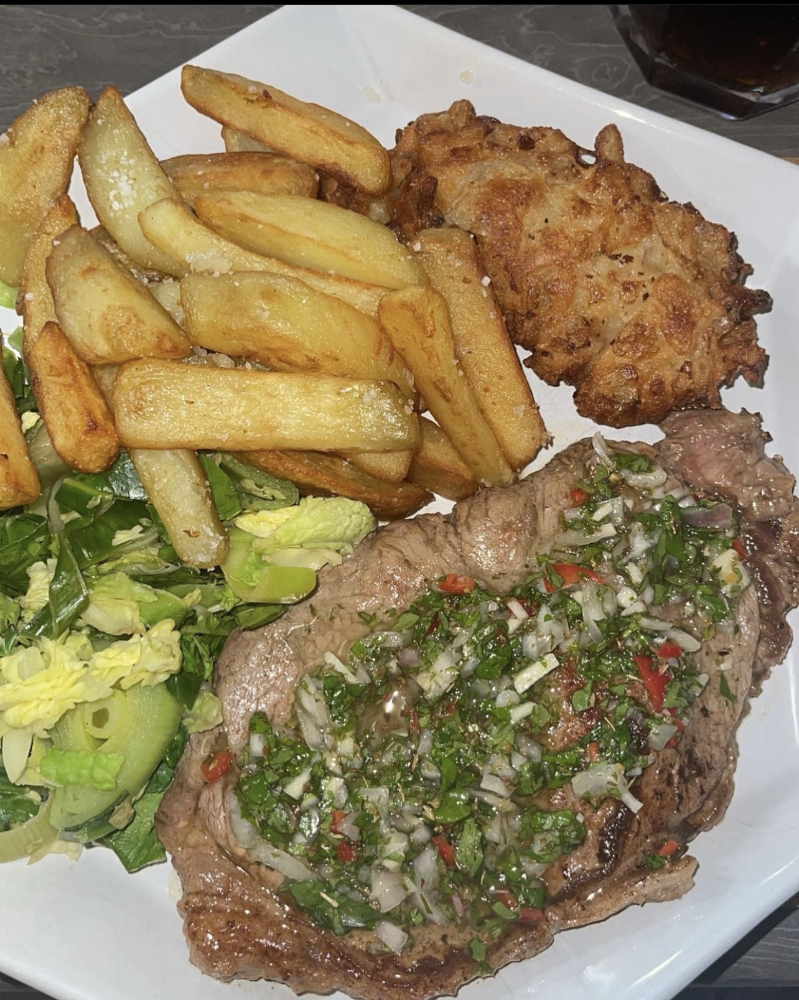

Steak Chimichurri

Description
Sunday 22nd May 2022 we fancied
something different to our usual sunday roast. I had
never seen or used chimichurri before, but this
was an absolutely outstanding flavour on my steak!
Ingredients
- Steak of your choice
- Parsley
- corriander
- Chilli
- lime
- salt flakes
- oil of your choice
Steps
- Prep your steak as you usually would. I like
to add salt into my steak and rub this in before
cooking.
- Once this is seared, add butter, garlic and rosemary
to the pan and base.
- Once this step is done, allow your steak to rest for
10 minutes. This will allow the steak to cook through
- once done, add your chimichurri ingredients above together
in a mixing bowl and place this on top of your steak. I did make
an onion load with mine, which was also great.
- ENJOY!